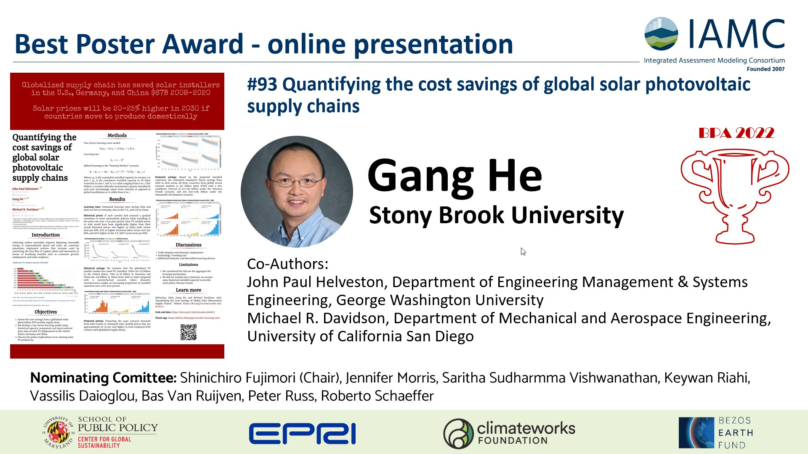

Best poster award in IAMC 2022

Summary
During the Fifteenth IAMC Annual Meeting held from 29 November to 1 December 2022, our paper “Quantifying the cost savings of global photovoltaic supply chains” won the “Best Poster Award” granted by the Integrated Assessment Modeling Consortium. 368 participants, 191 in person and 177 online, from 29 countries participated the meeting. This award was selected from 144 poster presentations (98 online and 46 in person).1
The Poster

Video
Transcript:
Hello everyone, my name is Gang He, and I’m an assistant professor in the Department of Technology and Society at Stony Brook University. I’m grateful for the Integrated Assessment Modeling Consortium 2022 Best Poster Award for online poster presentation.
I’d like to take the opportunity to share the main messages of the paper. To achieve carbon neutrality, the world must embark on a rapid and massive deployment of renewable energy. However, certain decoupling policies that restrict the free flow of capital, talent, and innovation may delay the continuous reduction in costs of renewable energy. The international climate policy now faces a crossroads - to continue relying on global supply chains or to shift towards domestic technology development and production.
Our research captures this policy dilemma and assesses the cost savings associated with a globalized solar PV module supply chain. We created a two-factor hybrid learning model that considers historical capacity, component, and input material prices of solar PV deployment from the United States, Germany, and China. The results show that the globalized PV module market has saved PV installers $24 billion in the US, $7 billion in Germany and $36 billion in China from 2008 to 2020, compared to a scenario where domestic manufacturers increasingly supplied installed capacities over a ten-year period. Projecting the same scenario forward to 2030, we estimate that solar module prices will be about 20-30%2 higher than with a globalized supply chain. Our findings emphasize the importance of international cooperation in the pursuit of a low-carbon future.
Acknowledgment
While I’m the lucky presenter of our collaborative paper, this award should also goes to my wonderful coauthors Dr. John Helveston and Dr. Michael Davidson, its truly a collaborative effort. Please check their websites and follow them to learn more about their amazing work.
I also want to thank the nominating committee. Thank you the IAMC community, which has long been an inspiration to work in this field. I hope I will find more opportunities to contribute and payback.
Twitter Announcement
Two ex-aequo online poster presenters:
— IAMConsortium (@IAMConsortium) December 2, 2022
🏆@DrGangHe, "Quantifying the cost savings of global solar photovoltaic supply chains" pic.twitter.com/OmPwEMeVEX
Links
Check 15th IAMC Annual Meeting: Awards for the official announcement.
Read more about the Best Poster Awardees.
Read more about our paper.
Read the paper summary.
IAMC
The Integrated Assessment Modeling Consortium (IAMC) is an organization of scientific research institutions that pursues scientific understanding of issues associated with integrated assessment modeling and analysis.
The IAMC was created in 2007 in response to a call from the Intergovernmental Panel on Climate Change (IPCC) for a research organization to lead the integrated assessment modeling community in the development of new scenarios that could be employed by climate modelers in the development of prospective ensemble numerical experiments for both the near term and long term.
More about IAMC: https://www.iamconsortium.org/about-us/
Footnotes
This number was updated from 20-25% to reflect an Author Correction.↩︎